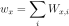
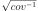
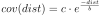

The Covariance Module¶
-
class
kite.Covariance(scene, config=<kite.covariance.CovarianceConfig object>)[source]¶ Analytical covariance for noise estimation of
kite.Scene.displacement.The covariance between
kite.Quadtree.leafsis used as a weighting measure for the optimization process.Two different methods are implemented to estimate the covariance function:
- The distance between
QuadNodeleaf focal points (covariance_focal) - The more accurate statistical distances between every nodes pixels,
this process is computational very expensive and
can take a few minutes or longer.
See
covarianceorweight_matrix.
Parameters: - quadtree (
Quadtree) – Quadtree to work on - config (
CovarianceConfig) – Config object
-
covarianceAnalytical(regime=0)[source]¶ Analytical covariance based on the spectral model fit from
modelPowerspec()Returns: Covariance and corresponding distances. Return type: tuple, numpy.ndarray(covariance_analytical, distance)
-
covariance_func¶ Getter: (Cached) Covariance function derived from powerspectrum of displacement noise patch. Type: tuple, numpy.ndarray(covariance, distance)
-
covariance_matrix¶ Getter: (Cached) Covariance matrix calculated from sub-distances pairs from quadtree node-to-node. Type: numpy.ndarray, size (nleafsxnleafs)
-
covariance_matrix_focal¶ Getter: (Cached) This matrix uses distances between focal points. Fast but statistically not reliable method. For final approach use covariance_matrix.Type: numpy.ndarray, size (nleafsxnleafs)
-
covariance_model¶ Covariance model parameters for
modelCovariance()retrieved fromcovarianceAnalytical.Getter: Get the parameters. Type: tuple, aandb
-
covariance_model_rms¶ Getter: RMS missfit between covariance_modelandcovariance_funcType: float
-
export_weight_matrix(filename)[source]¶ Export the full
weight_matrixto an ASCII file. The data can be loaded throughnumpy.loadtxt().Parameters: filename (str) – path to export to
-
getLeafCovariance(leaf1, leaf2)[source]¶ Get the covariance between
leaf1andleaf2.Parameters: Returns: Covariance between
leaf1andleaf2Return type: float
-
getLeafWeight(leaf, model='focal')[source]¶ Get the absolute weight of
leaf, summation of all weights fromkite.Covariance.weight_matrix
Parameters: Returns: Weight of the leaf
Return type: float
-
noise_coord¶ Coordinates of the noise patch in local coordinates.
Setter: Set the noise coordinates Getter: Get the noise coordinates Type: numpy.ndarray,[llE, llN, sizeE, sizeN]
-
noise_patch_size_km2¶ Getter: Noise patch size in  .
.Type: float
-
nthreads¶ - Number of threads (CPU cores) to use for full covariance
- calculation
Setting
nthreadsto0uses all available cores (default).Setter: Sets the number of threads Type: int
-
plot¶ Getter: (Cached) Simple overview plot to summarize the covariance.
-
powerspecModel(k)[source]¶ Calculates the analytical power based on the fit of
powerspec_model().Parameters: k (float or numpy.ndarray) – Wavenumber(s)Returns: Power at wavenumber kReturn type: float or numpy.ndarray
-
powerspec_model¶ Powerspectrum model parameters based on the spectral model after
modelPowerspec()Returns: Model parameters aandbReturn type: tuple, floats
-
powerspec_model_rms¶ Getter: RMS missfit between powerspecNoise1Dandpowerspec_model`Type: float
-
selectNoiseNode()[source]¶ Choose noise node from quadtree the biggest
QuadNodefromQuadtree.Returns: A quadnode with the least signal. Return type: QuadNode
-
setConfig(config=None)[source]¶ Sets and updated the config of the instance
Parameters: config ( CovarianceConfig, optional) – New config instance, defaults to configuration provided by parentScene
-
structure_func¶ Getter: (Cached) Structure function derived from noise_patchType: tuple, numpy.ndarray(structure_func, distance)Adapted from http://clouds.eos.ubc.ca/~phil/courses/atsc500/docs/strfun.pdf
-
syntheticNoise(shape=(1024, 1024), dEdN=None, anisotropic=False)[source]¶ - Create random synthetic noise with the same character as defined
- in
noise_data.
This function uses the powerspectrum of the empirical noise (
powerspecNoise()) to create synthetic noise for model pertubation. The default sampling distances are taken fromkite.scene.Frame.dEandkite.scene.Frame.dN. And can be overwritten. :param shape: shape of the desired noise patch.Pixels in northing and easting (nE, nN), defaults to (1024, 1024).Parameters: dEdN – The sampling distance in easting, defaults to ( kite.scene.Frame.dE,kite.scene.Frame.dN).Returns: Noise patch Return type: numpy.ndarray
-
weight_matrix¶ Getter: (Cached) Weight matrix from full covariance . Type: numpy.ndarray, size (nleafsxnleafs)
-
weight_matrix_focal¶ Getter: (Cached) Weight matrix from fast focal method  .
.Type: numpy.ndarray, size (nleafsxnleafs)
-
weight_vector¶ Getter: (Cached) Weight vector from full covariance . Type: numpy.ndarray, size (nleafs)
-
weight_vector_focal¶ Getter: (Cached) Weight vector from fast focal method .Type: numpy.ndarray, size (nleafs)
- The distance between
The CovarianceConfig¶
-
class
kite.covariance.CovarianceConfig(**kwargs)[source]¶ Undocumented.
-
♦
noise_coord¶ numpy.ndarray(pyrocko.guts_array.Array), optionalNoise patch coordinates and size,
-
♦
a¶ float, optionalExponential covariance model; scaling factor. See
modelCovariance()
-
♦
b¶ float, optionalExponential covariance model; exponential decay. See
modelCovariance()
-
♦
variance¶ float, optionalVariance of the model
-
♦
adaptive_subsampling¶ bool, default:TrueAdaptive subsampling flag for full covariance calculation.
-
♦
covariance_matrix¶ numpy.ndarray(pyrocko.guts_array.Array), optionalCached covariance matrix, see
covariance_matrix
-
♦
Model Assumptions¶
-
kite.covariance.modelCovariance(distance, a, b)[source]¶ Exponential model to estimate a positive-definite covariance
We assume the following covariance model to describe the empirical noise observation:

Parameters: - distance (float or
numpy.ndarray) – Distance between - a (float) – Linear model parameter
- b (float) – Exponential model parameter
Returns: Covariance at
distanceReturn type: - distance (float or
-
kite.covariance.modelPowerspec(k, beta, D)[source]¶ Exponential Linear model to estimate a log-linear powerspectrum
We assume the following log-linear model for the measured powerspectrum

Parameters: - k (float or
numpy.ndarray) – Wavenumber - a (float) – Exponential model factor
- b (float) – Fractional model factor
- k (float or